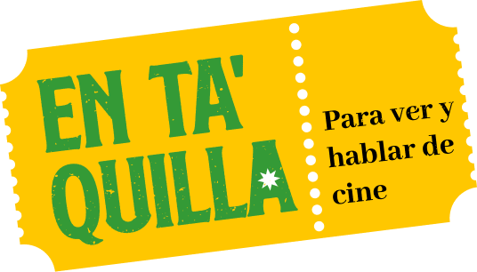
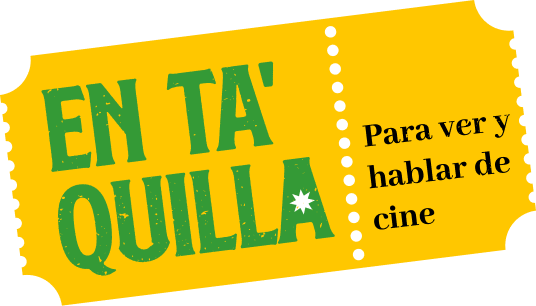
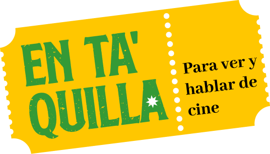

07:12:32
Entrada gratis cupos limitados
Salón A203
Bloque A

(2007) DIRECTORES Marjane Satrapi Vicent Parannaud Martes 15 de junio 3:30pm - 5:00 p.m.
Proyección de cortometrajes de Animación Análoga y digital de la mano de el docente Alex Pernett y Mauricio Lindo, un recopilatorio de buenas historias desarrolladas por estudiantes del programa.
Putrefacción(2024-1)
Epifanía(2001-1)
El corazón maldito(2023-1)
Zoe y blackie(2024-1)
Aprendiz de mago(2024-1)
The fores of nightmare(2024-2)